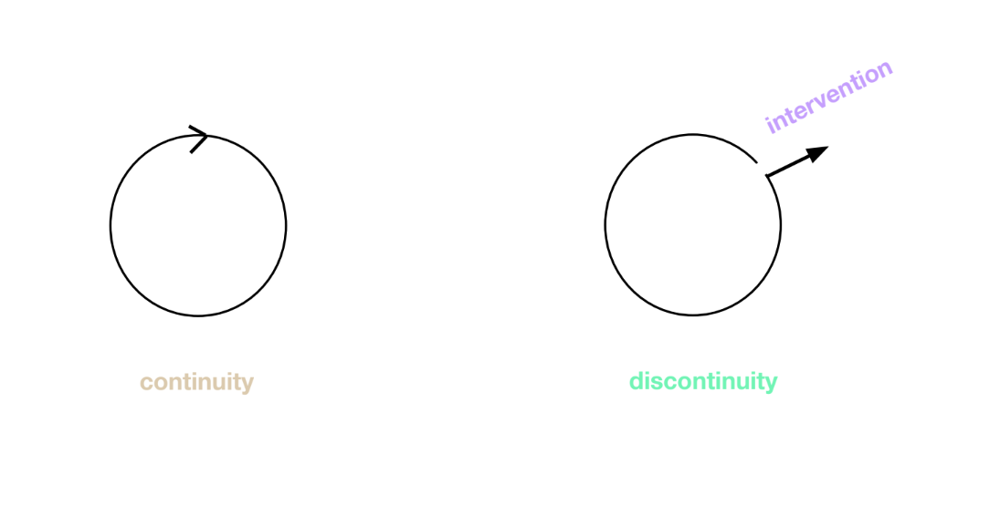
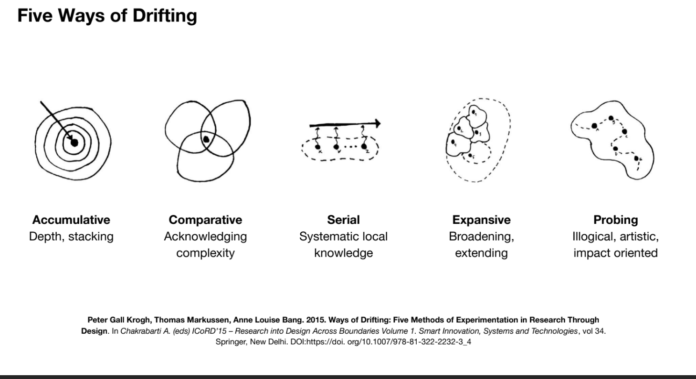

Design Studio II
Design Autoethnography:
- Describe and systematically analyze personal experiences to understand socio-technical systems.
- Reflection and self-evaluation through autoethnography.
- Autoethnographic practices = self-reflexive.
- Responsibility, accountability, transparency, empathy, and positionality.
- A personal vision to design.
Main Qualities:
- Defined study boundaries: Being able to describe the limits of the study.
- Authenticity: Being personally involved, thoroughness for validity.
- Plausibility or Scholarship: How is it relevant to ongoing research?
- Criticality: Imagining ways of thinking and acting differently.
- Self-revealing communication: Be honest with your findings. Communicate in an open and transparent way.
- Ability to Generalize: How does your 1PP research relate to others? How do I scale-up from the “self”?
Alternative Presents
Understanding overarching narratives. (Narrativas generales)
Making sense of the alternative presents you are creating with the support.
Opening escape routes to the present continuities.
From Areas of Interest to Alternative Presents

Design Space:
